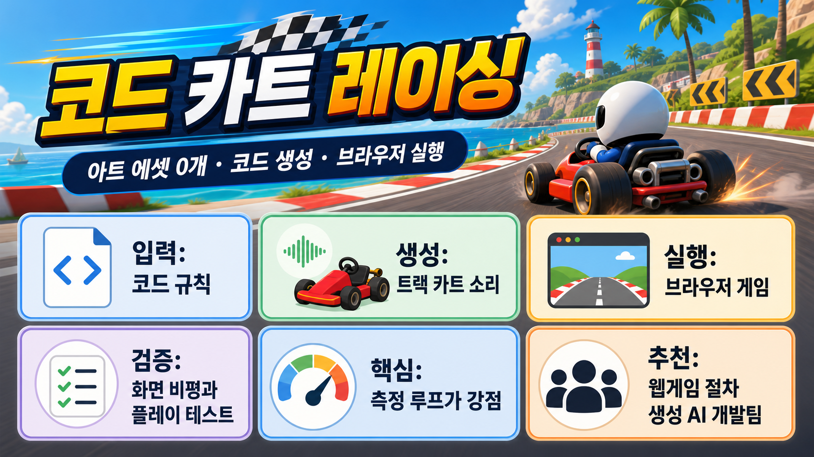

ryancampbell/kart-royale
한눈에 보기
브라우저에서 돌아가는 카트 레이싱 게임을 메시, 텍스처, 사운드까지 전부 코드로 생성해 만든 실험형 웹게임 저장소야.
TypeScriptWebGLprocedural assetsAI agent buildMIT
44stars
13forks
0런타임 아트 에셋
13README 기준 테스트 하네스
짧은 결론
이 저장소는 “브라우저 카트 게임”을 보는 것도 좋지만, 더 중요한 건 에이전트가 만든 결과를 실제 픽셀과 플레이 하네스로 계속 검증하는 방식이야. 웹게임이나 절차 생성 프로젝트를 만들 때 측정 루프 예제로 꽤 쓸 만해.